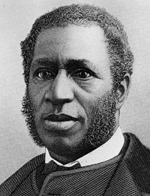

|

|

|
|
|
A two-term congressman from South Carolina, Richard Harvey Cain was born in
Greenbriar County, Virginia, the son of an African-born father and a Cherokee
Indian mother. In 1831, he moved with his parents to Ohio, where he was educated
in local schools. As a youth, he worked on Ohio River steamboats. Licensed to
preach in the Methodist Episcopal church in 1844, Cain abandoned the
denomination for the A.M.E. church after experiencing discrimination. He was
assigned to a pulpit in Muscatine, Iowa, and ordained a bishop in 1859. After
attending Wilberforce University, Cain became a minister in Brooklyn, New York,
during the Civil War and attended the 1864 national black convention at
Syracuse, New York.
Cain came to South Carolina as a missionary in 1865 and reorganized the
Emmanuel Church in Charleston, which became the largest A.M.E. congregation in
the state and a powerful political base for Cain. He edited the South
Carolina Leader, later renamed the Missionary Record, 1866-68. He
quickly became involved in Reconstruction politics, attending the state black
convention of 1865, serving in the constitutional convention of 1868 and in the
state Senate, 1868-70. Along with Martin Delany, Cain was a severe critic of
carpetbaggers in the Republican party and was a leader of blacks committed to
political reform. He failed in a bid for the Republican nomination for
lieutenant governor in 1872, but was elected to Congress, serving 1873-75. He
did not run for reelection but in 1876 was elected to a second term, 1877-79.
Cain also served as chairman of the Charleston Republican party, 1870-71, as a
member of the militia and of a fire company, and as president of the black-owned
Enterprise Railroad. According to the 1870 census, he owned $5,000 in real
estate and $500 in personal property. He also became the target of threats of
violence. Cain's adopted daughter later recalled: "From the moment he became a
candidate for delegate to the Constitutional Convention, a guard was necessary
night and day to watch our homes ... We, his family, lived in constant fear at
all times."
Cain was an outspoken advocate of political action to secure land for the
freedmen. "Give them of the confiscated plantations," he wrote in June 1865.
"Let them have homesteads ... Then we shall see the Southern States blooming.
The cotton fields and rice plantations will produce as never before, ... and
universal prosperity will reign supreme." At the constitutional convention, Cain
proposed petitioning Congress to appropriate money to assist blacks in
purchasing land. "The abolition of slavery," he said, "has thrown these people
upon their own resources. I know the philosopher of the New York Tribune
[Horace Greeley] says, 'root, hog, or die,' but in the meantime we ought to have
some place to root." Cain opposed a proposal for debtor relief, arguing that
indebted landowners ought to be compelled to place their lands on the market.
Later, Cain served as a member of the state land commission. He also became
involved in an ambitious project to buy three thousand acres of land and sell it
in small plots to freedmen. The plan's bankruptcy led to Cain's indictment for
fraud, but he was never brought to trial. In Congress, Cain spoke strongly in
support of civil rights legislation: "Spare us our liberties; give us peace;
give us a chance to live; give us an honest chance in the race of life; place no
obstruction in our way; oppress us not; give us an equal chance; and we ask no
more of the American people."
During Reconstruction, Cain rejected talk of black emigration. "We are not
going one foot or one inch from this land," he said in 1874. "Our mothers and
our fathers and our grandfathers and great-grandfathers have died here ... Here
we have made this country rich and great by our labor and toil ... We feel that
we are part and parcel of this great nation." With the end of Reconstruction,
however, Cain supported the Liberia emigration movement of 1877-78. "There are
thousands," he wrote in 1877, "who are willing and ready to leave ... The
colored people of the South are tired of the constant struggle for life and
liberty with such results as the 'Mississippi Plan.'" Cain himself left South
Carolina in 1880 to become an A.M.E. bishop in Louisiana and Texas. He served
briefly as president of Paul Quinn College in Waco, Texas, then became bishop of
the diocese of New York, New Jersey, and Pennsylvania. He died in Washington,
D.C.
Source: Eric Foner, Freedom's Lawmakers: A Directory of Black
Officeholders during Reconstruction (New York: Oxford University Press,
1993), 35-36.
|